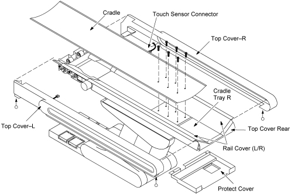
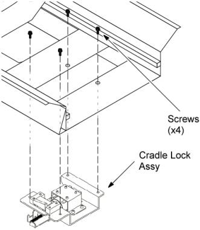
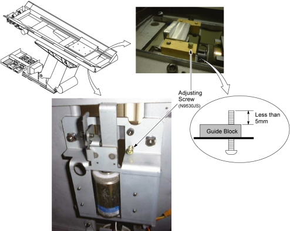
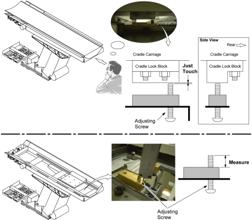
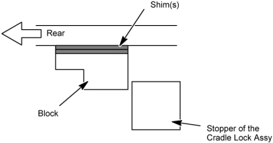
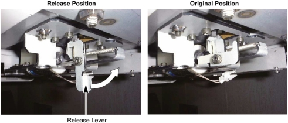

Operating Documentation
Direction 5181166-800, Rev# 7
BrightSpeed Select Service Methods Adv
Operating Documentation |
| Required Persons | Preliminary Reqs | Procedure | Finalization |
|---|---|---|---|
| 1 |
| Last Revised: | 16 March 2007 |
| Item | Qty | Effectivity | Part# | Manufacturer | |
|---|---|---|---|---|---|
| Cradle Lock Assembly | 1 | - | 2304402 | - | |
| Understand and follow the Safety Guidelines Manual. | |
Raise the Table to its highest position.
| NOTE: | If the Table up/down movement is inoperative, use the service power cable to raise the Table (refer to Enforced Table Elevation) . |
Move the cradle carriage to the mechanical OUT limit position by hand.
Remove power from Table by turning off “120VAC”, “Axial Drive” and “HVDC” switches on the service switch panel.
Remove the following cover and component from the Table:
Cradle (Refer to Cradle)
Top Covers (L/R) (Refer to Table Covers Removal)
Rail Covers (L/R) (Four(4)x2 Screws)
Protect Cover (Four(4) Screws)
Cradle Tray–R (Six(6) Screws)
Top Cover Rear (Two(2) Screws)
Illustration 1: Table Covers Removal

Replace the Cradle Lock Assy with new one.
Remove the Cradle Lock Assy by unscrewing its 4 screws.
Install the new Cradle Lock Assy. Tighten the screws securely while pressing the Cradle Lock Assy to the front.
Illustration 2: Cradle Lock Assembly Removal

Adjust the cradle lock block height using shim(s) (0.5mm, 1.0mm).
Unscrew the existing screw, and install the block height adjusting screw onto the cradle block.
Verify that the end point of the screw sticked out of guide block is less than 5mm.
Illustration 3: Block Height Adjusting Screw

Temporarily install the cradle onto the cradle carriage.
| After the end point of the screw and the cradle lock block are just touching, do NOT turn the adjusting screw; otherwise, the cradle will be lifted. | |
Move the cradle backward until the cradle is locked by the cradle lock assy.
and, turn the adjusting screw until the end point of the screw and the cradle lock block just touch.
Remove the cradle and measure the adjusting screw (to one decimal place).
Illustration 4: Adjusting Screw Measurement

Determine the proper thickness of shim(s) according to the formula:
Shim thickness = [Measured length] – 6.5
ex: If the measured length is 8.5mm, 2.5mm thickness shims (8.5–6.5=2) must be prepared.
Install the shim(s) between the block and cradle carriage (see Illustration 5).
Unscrew the adjusting screw, and tighten the screw removed in Step 6.a.
Install the cradle, and verify that:
Move the cradle manually IN or OUT and the cradle is locked firmly by the cradle lock assy.
Release the cradle lock using the cradle lock release lever, then move the cradle manually IN or OUT so that the cradle could move smoothly with no lock.
If the cradle locking function does not work well, adjust the block position again.
Illustration 5: Shim(s)

| Do not forget to return the release lever. If it does not, the table will be damaged when moving the cradle. | |
Return the cradle lock release lever properly to the original position.
Illustration 6: Cradle Lock Release Lever

Restore the Table to original configuration.
No finalization required.